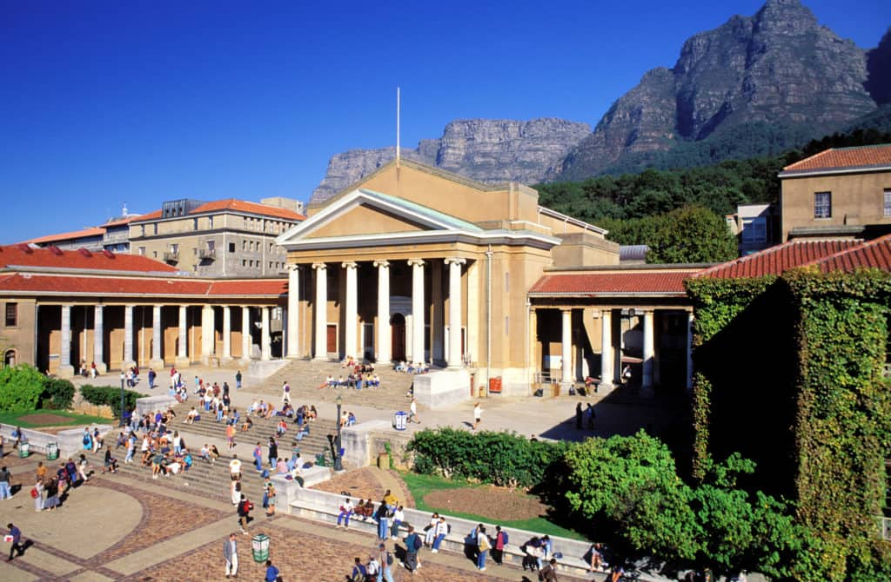
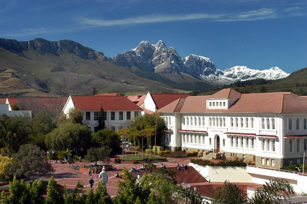
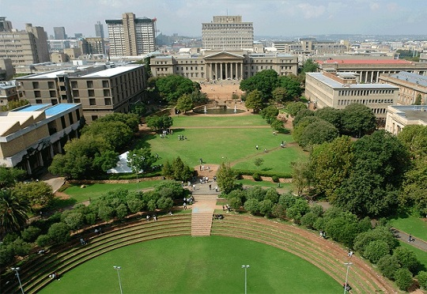
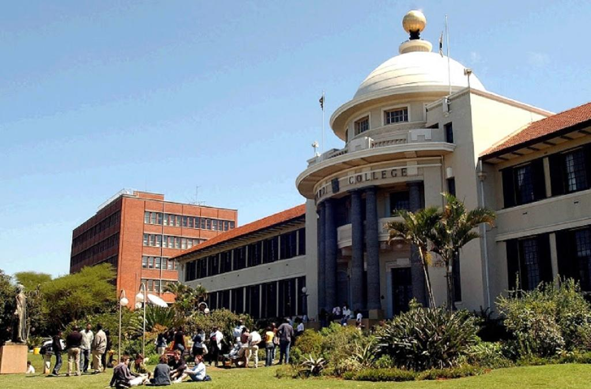
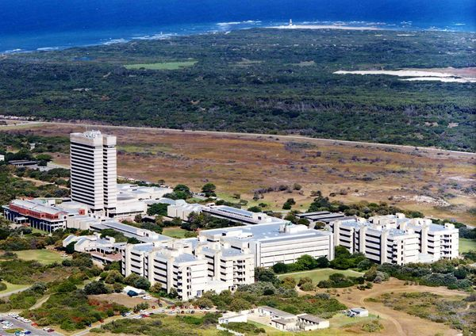
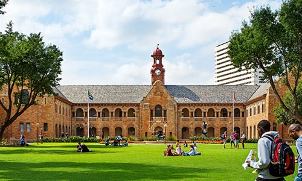
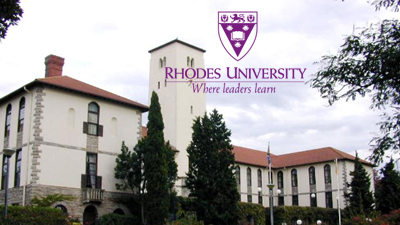
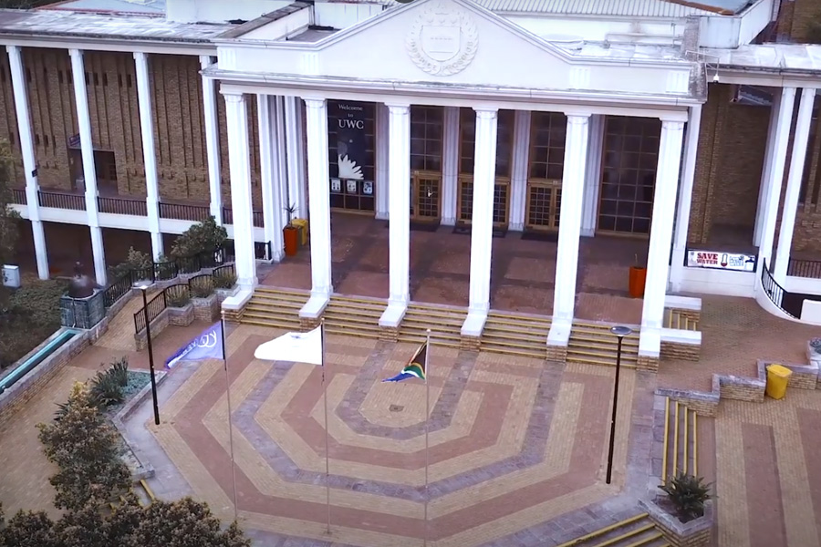

Universities and Their main application sites.
University of Cape Town
Province: Western Cape
City/town: Cape Town
Application cycle : 01 April 2022 - 31 July 2022 (undergraduate programmes)
Download Undergraduate Prospectus here
Stellenbosch University
Province: Western Cape
City/town: Cape Town
Application cycle : 04 April 2022 - 31 July 2022 (undergraduate programmes)
Download Undergraduate Prospectus here
University of the Witwatersrand
Province: Gauteng
City/town: Johannesburg
Application cycle : 04 April 2022 - 30 September 2022 (undergraduate programmes)
Download Undergraduate Prospectus here
University of Kwazulu Natal
Province: Kwazulu Natal
City/town: Durban
Application cycle : 01 April 2022 - 30 September 2022 (undergraduate programmes)
Nelson Mandela university
Province: Eastern Cape
City/town: Gqeberha
Application cycle : 01 April 2022 - 30 September 2022 (undergraduate programmes)
Download undergraduate Prospectus
University of Pretoria
Province: Gauteng
City/town: Pretoria
Application cycle : 01 April 2022 - 30 June 2022 (undergraduate programmes)
Rhodes University
Province: Eastern Cape
City/town: Grahamstown
Application cycle : 01 April 2022 - 30 November 2022 (undergraduate programmes)
University of Johannesburg

Province: Gauteng
City/town: Johannesburg
Application cycle : 01 April 2022 - 30 September 2022 (undergraduate programmes)
Downlaod Undergraduate Prospectus
University of Western Cape
Province: Western Cape
City/town: Cape Town
Application cycle : 04 May 2022 - 30 September 2022 (undergraduate programmes)
Applications not yet opened
The page is being upated daily, if the university you are looking for is not listed here, keep visiting the page.